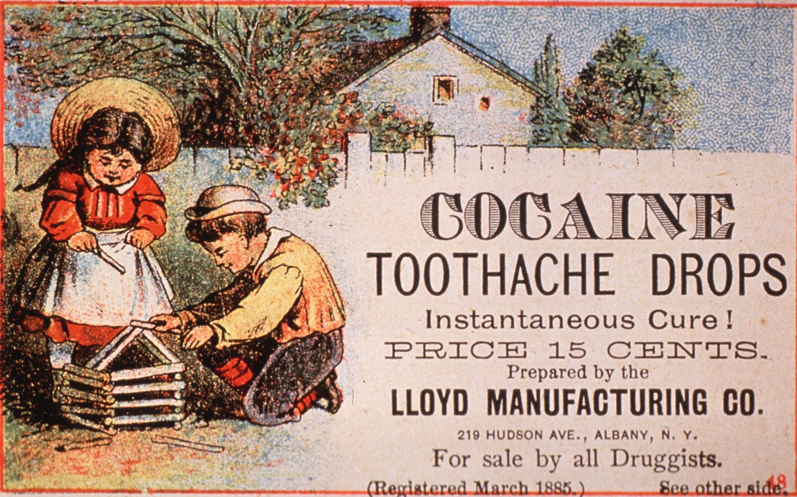
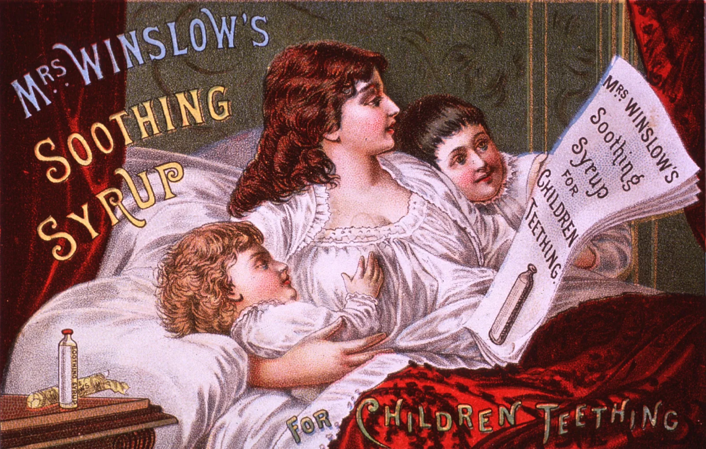
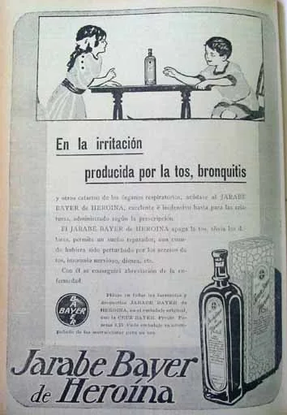
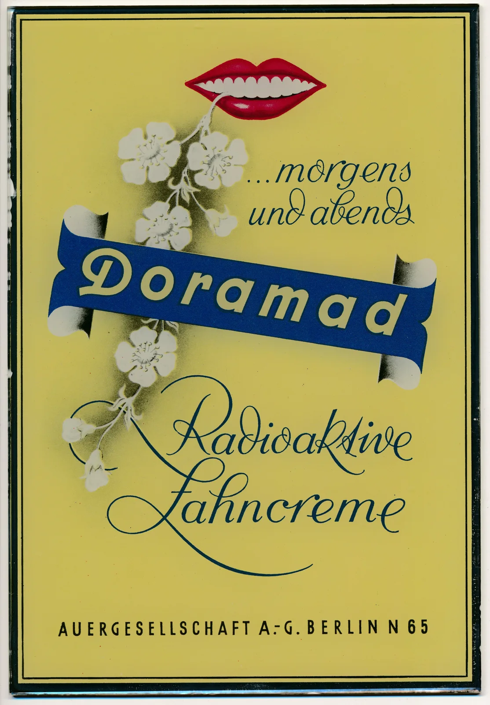
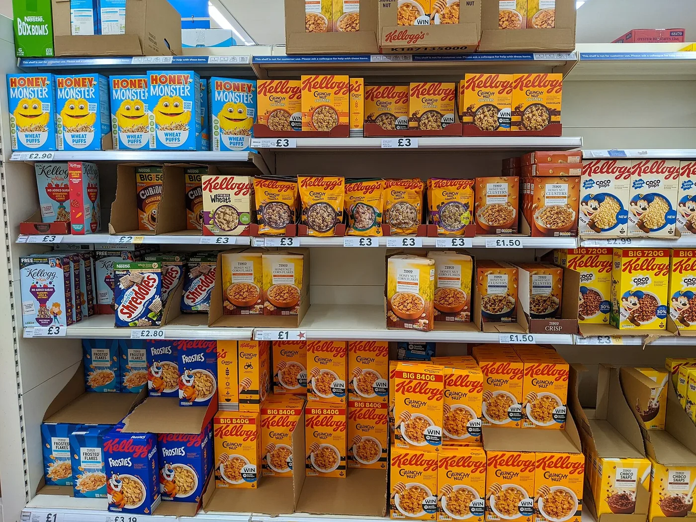
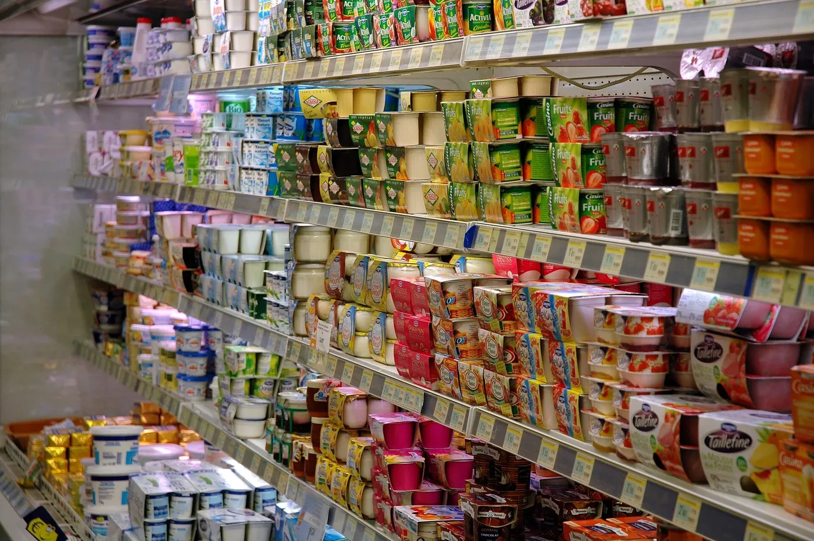
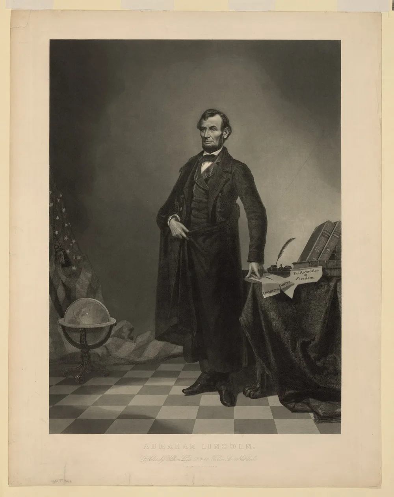
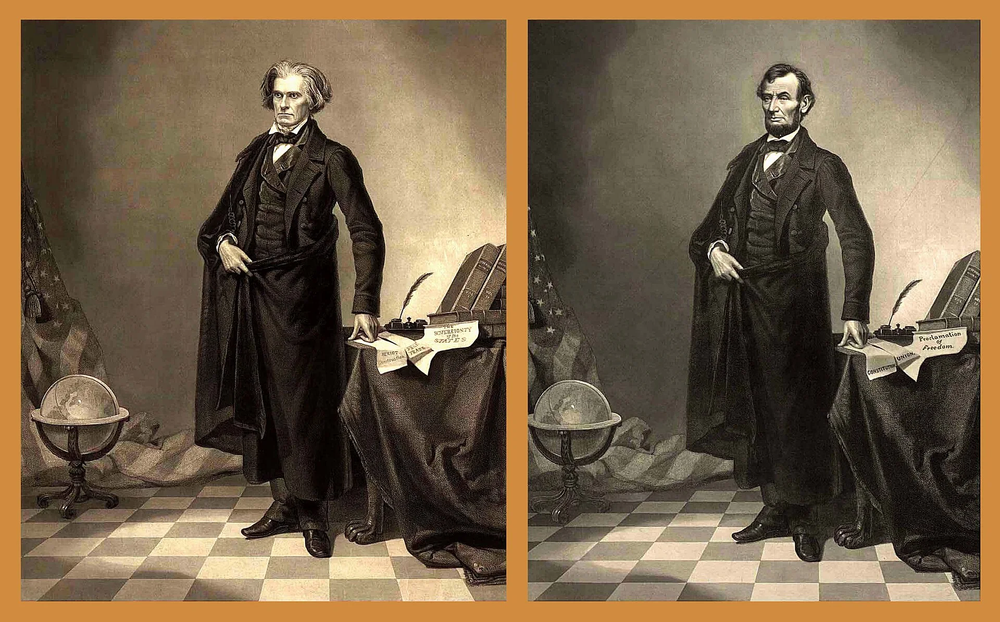

Kostproben: Werbung früher und heute, Selbstbild, Fehlbilder, Spiele – mit Vorher-nachher-Regler, Schätzfragen und Zuordnen.
Ein Witz in der Pause. Die halbe Klasse lacht.
„Du bist so lustig!“ – Das Kind probiert es noch einmal.
Im Sesselkreis: „Na, unser Klassenclown!“ Alle schauen erwartungsvoll.
Es liefert, was erwartet wird. Ernst sein fällt auf und irritiert.
Die Rolle sitzt. Selbstbild und Fremdbild sind deckungsgleich.




Ärzt*innen warnten: 1911 führt die American Medical Association die Patentmedizin von Mrs. Winslow unter „Baby Killers“.
Werbung für Arzneimittel darf sich nicht an Kinder wenden (Werberat, Ethik-Kodex 2.2.1.2 c).


→Das heißt: Was auf der Packung nach Milch, Vollkorn oder Frucht klingt, ist oft vor allem Zucker. Bei Nutella und Kinder Schokolade ist mehr als die Hälfte Zucker. Würfel zeigen den Zucker pro 100 g (1 Würfel ≈ 3 g; eigene Umrechnung).
foodwatch (2021)↗; Moore u. a. (2018)↗; Ferrero (2026a)↗; Ferrero (2026b)↗; WHO (2015)↗; foodwatch (2011)↗Ziehen Sie den Regler: Geheimdienstchef Nikolai Jeschow wurde 1940 hingerichtet – und danach aus dem Foto vom Moskau-Wolga-Kanal entfernt.
„… Yezhov was subsequently removed from the original image after his execution in February 1940.“
… Jeschow wurde nach seiner Hinrichtung im Februar 1940 aus dem Originalbild entfernt.
Beide Fotos: Fotograf*in unbekannt, gemeinfrei (Wikimedia Commons)


Sogar die Papiere wurden getauscht: Aus „Sovereignty of the States“ (Souveränität der Einzelstaaten) wurde „Proclamation of Freedom“ (Freiheitsproklamation) – die Botschaft des Bildes gleich mit.
→Das heißt: Zwischen 6 – 7 und 8 – 9 Jahren steigt die Internetnutzung von etwas mehr als einem Drittel auf zwei Drittel der Kinder (Deutschland, KIM-Studie 2024) – die Volksschule ist der richtige Zeitpunkt für Medienbildung.
Feierabend u. a. (2025)↗Nicht der Inhalt allein macht ein Spiel problematisch, sondern Rahmen, Darstellung und Alter – sonst müssten wir Schach verbieten.
„… so kamen die Spielmodi ‚Battle Royale‘ und ‚Creative‘ als reine Online-Inhalte erst später hinzu und wurden bisher nicht … eingereicht.“
USK, August 2019
Die „12“ stammt aus der Zeit von „Rette die Welt“. Ohne diese Vorgeschichte wäre Battle Royale womöglich höher eingestuft worden – das automatische Verfahren gab 2018 tatsächlich 16. Updates übers Netz ändern ein Etikett nicht von selbst.
Spieleratgeber NRW: ab 14 – Waffengewalt als Spielprinzip, Kaufdruck, Chat mit Fremden.
| → Leertaste | nächster Schritt bzw. nächste Folie |
| ← | einen Schritt zurück |
| Umschalt + →/← | ganze Folie vor/zurück (Schritte überspringen) |
| N | Notizen-Leiste ein/aus (die Folie rückt zur Seite) |
| P | eigenes Notizfenster (Referentenansicht) für den zweiten Bildschirm |
| S | zwei Bildschirme: Notizfenster hier, Folien als Vollbild auf dem Beamer (Chrome/Edge, auch am Mac) |
| V | im Notizfenster: zwischen Notizen und großer Folie umschalten |
| Z | Stifte: Malstift, Leuchtstift, Emoji-Stempel, Radierer |
| X | Spotlight: alles abdunkeln bis auf einen Lichtkreis (Mausrad: Größe) |
| + / − | Schrift der Notizen größer/kleiner |
| O | Übersicht aller Folien mit Suche |
| Zahl + Enter | direkt zu Folie springen |
| F | Vollbild |
| B | Bildschirm schwarz (Pause) |
| L | Laserpointer |
| R | Timer im Notizfenster zurücksetzen |
| K | Pointe-Banner auf den Folien aus/ein |
| G | Glossar aller Fachbegriffe (Begriffe auf den Folien sind anklickbar) |
| Quellenangabe anklicken | springt ins Quellenverzeichnis · ↗ öffnet die Originalquelle |
Tipp für den Hörsaal: Beamer als erweiterten Bildschirm anschließen (nicht spiegeln), dann S – die Folien gehen als Vollbild auf den Beamer, das Notizfenster bleibt am Laptop (Chrome oder Edge, Windows und Mac; der Browser fragt einmal nach der Erlaubnis „Fensterverwaltung“). In Safari oder Firefox: Fenster auf den Beamer ziehen, F, dann P. Gesteuert wird aus beiden Fenstern.